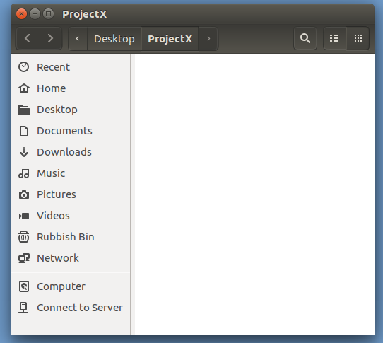
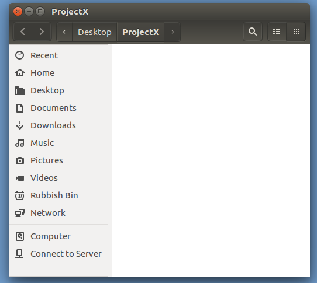

|
|
|
|
Maybe start with a video on directory structure?
Looked at existing ... not impressed! Quality poor and too much testostrone nerd release.
Need to do it myself
Points:
/ ... correspondance (vaguely) with C:\
tree hyracrchy ... wobder how one spells that?
relative to cd addressing - ./fiddle/diddle (default so same as fiffle/diddle)
relative to home - ~/fiddle/diddle
absolute - /home/hero/fiddle/diddle
based around picture like

Click for GUI equivalent.
 Double Click on the ProjectX folder icon.

Admire the emptiness of the Folder/Directory called ProjectX.
Double Click on the ProjectX folder icon.

Admire the emptiness of the Folder/Directory called ProjectX.
cd
cd
cd Desktop
mkdir
mkdir ProjectX
Click for GUI equivalent.
 Right hand mouse click in the Desktop background.
Select New Folder.
Right hand mouse click in the Desktop background.
Select New Folder.
 Right hand mouse click on the new Untitled Folder icon.
Select Rename.
Enter ProjectX.
Admire new Folder/Directory called ProjectX.
Right hand mouse click on the new Untitled Folder icon.
Select Rename.
Enter ProjectX.
Admire new Folder/Directory called ProjectX.
cd ProjectX